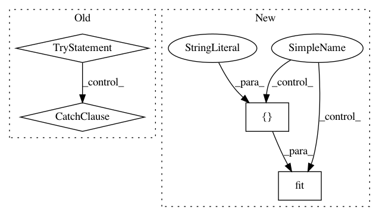

9b39c4c4d20eef7a2b0b8420945f09d3731e1b67,sklearn/feature_extraction/tests/test_text.py,,test_countvectorizer_custom_vocabulary_gap_index,#,305
Before Change
def test_countvectorizer_custom_vocabulary_gap_index():
vocab = {"pizza": 1, "beer": 2}
try:
CountVectorizer(vocabulary=vocab)
except ValueError as e:
assert "doesn"t contain index" in str(e).lower()
def test_countvectorizer_stop_words():
cv = CountVectorizer()
cv.set_params(stop_words="english")
assert cv.get_stop_words() == ENGLISH_STOP_WORDS
After Change
vocab = {"pizza": 1, "beer": 2}
with pytest.raises(ValueError, match="doesn"t contain index"):
vect = CountVectorizer(vocabulary=vocab)
vect.fit(["pasta_verdura"])
def test_countvectorizer_stop_words():
cv = CountVectorizer()
In pattern: SUPERPATTERN
Frequency: 3
Non-data size: 4
Instances
Project Name: scikit-learn/scikit-learn
Commit Name: 9b39c4c4d20eef7a2b0b8420945f09d3731e1b67
Time: 2020-02-16
Author: sci@feldbauer.org
File Name: sklearn/feature_extraction/tests/test_text.py
Class Name:
Method Name: test_countvectorizer_custom_vocabulary_gap_index
Project Name: ClimbsRocks/auto_ml
Commit Name: 019f0c822cd8f2833d3b25855f2df99cd5a465a4
Time: 2017-08-17
Author: ClimbsBytes@gmail.com
File Name: auto_ml/utils_model_training.py
Class Name: FinalModelATC
Method Name: fit
Project Name: scikit-learn/scikit-learn
Commit Name: 9b39c4c4d20eef7a2b0b8420945f09d3731e1b67
Time: 2020-02-16
Author: sci@feldbauer.org
File Name: sklearn/feature_extraction/tests/test_text.py
Class Name:
Method Name: test_countvectorizer_custom_vocabulary_repeated_indices